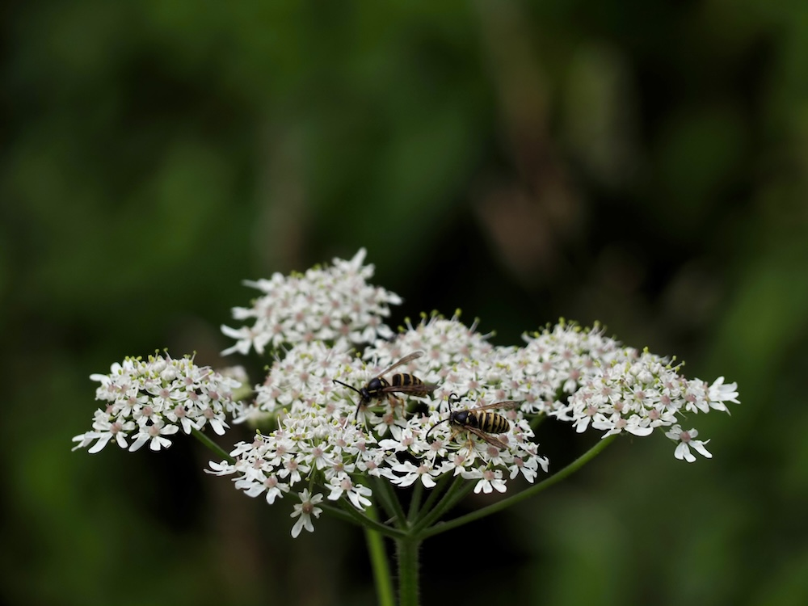

Riese der Sommerwiese — beeindruckend, aber nicht ganz harmlos.


Vorsicht beim Anfassen
Wer dem Bärenklau zu nahe kommt und sich danach in die Sonne legt, kann unangenehme Quaddeln davontragen. Die Pflanze enthält Stoffe (Furanocumarine), die in Verbindung mit UV-Licht die Haut wie eine Verbrennung reagieren lassen. Klingt fies, ist es auch. Praktischer Tipp: An warmen Tagen mit langen Hosen und Ärmeln durch hochwüchsige Wiesen — und Hände waschen, falls man Pflanzenteile angefasst hat.
Bär oder Hercules?
Der Name „Bärenklau“ kommt vom altdeutschen „Bären-klauwa“ (Bärenkralle) — gemeint sind die kralligen, breit-gespreizten Blätter. Der lateinische Name „Heracleum“ verweist auf Herakles, den griechischen Heros — wegen der gewaltigen Größe der Pflanze. Beide Namen sagen das Gleiche: „da kommt was Großes“.
Wissenswertes & Merksätze
Erkennen leicht gemacht
Sehr großer, hohler, gefurchter Stängel mit borstiger Behaarung. Blätter riesig, drei- bis siebenteilig gefingert, bis 50 cm groß. Doldenstrahlen breit, weiße bis grünlich-weiße Einzelblüten.
Verwechslung mit dem RIESEN-Bärenklau
Der Wiesen-Bärenklau ist die heimische, vergleichsweise harmlose Variante. Sein eingeschleppter Vetter, der Riesen-Bärenklau (Heracleum mantegazzianum), wird bis zu 5 m hoch und ist DEUTLICH gefährlicher — größere Mengen Furanocumarine, schwere Verbrennungen. Wer einen sieht: Meldung bei der Gemeinde, nicht selbst anfassen.